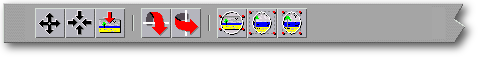

<!-- Documentation Xclamation (c)1994-2000 AXENE contact axene@axene.org>
<html>

<head>
<title>&quot;Images&quot; Horizontal Toolbar</title>
</head>

<body BGCOLOR="#FFFFFF" BACKGROUND="Images/back.gif" TEXT="#000000">

<p ALIGN="right">  </p>

<p><br>
<br>
The 'Images' toolbar provides the necessary tools to modify the appearance of an image in
its frame. To access the buttons on this toolbar a single frame containing images must be
selected on the display screen of the active document. <br>
<br>
</p>

<hr>

<p align="center"><br>
 <br>
<small><i>Screen shot: Images Toolbar </i></small></p>

<p><br>
</p>

<hr>

<p><br>
</p>

<h3>First section of the Toolbar:</h3>

<ul>
  <li> <a NAME="move_icon">The first button <b>moves the image</b>
    within its frame. The user must click once to pick up the image, re-position it, then
    click again to set it down. During re-positioning it is possible to cancel the action by
    clicking on the right mouse button. Once the image is set, clicking on the right mouse
    button shifts Xclamation back to selection mode. </a><br>&nbsp;</li>
  <li> <a NAME="center_icon">The second button <b>re-centers
    the image</b> within its frame, causing the center of the image and the center of the
    frame to correspond. </a><br>&nbsp;</li>
  <li> <a NAME="reset_icon">The third button <b>restore the
    image</b>, that is to say re-centers the image within its frame and returns it to its
    original size. </a><br>&nbsp;</li>
</ul>

<p><br>
</p>

<h3>Second Section of the Toolbar:</h3>

<ul>
  <li> <a NAME="fliph_icon">The first button <b>inverses the
    image</b> vertically within its frame. The mirror effects creates a symmetry with respect
    to the horizontal axis passing through the center of the image. If the frame has undergone
    a rotation, the symmetry is created with respect to the horizontal axis as affected by the
    frame's angle of rotation. </a><br>&nbsp;</li>
  <li> <a NAME="flipv_icon">The second button <b>inverses the
    image</b> horizontally within its frame. The mirror effect creates a symmetry with respect
    to the vertical axis running through the center of the image. If the frame has undergone a
    rotation, the symmetry is created with respect to the vertical axis as affected by the
    frame's angle of rotation. </a><br>&nbsp;</li>
</ul>

<p><br>
</p>

<h3>Third Section of the Toolbar:</h3>

<ul>
  <li> <a NAME="min_aspect_icon">The first button <b>displays
    the entire image within its frame without changing the shape of the image</b>. The
    enlargement factor adjusts itself so that the image be entirely visible in the virtual
    rectangle circumscribing the frame. This button works as a display mode; for example, if
    the shape of the frame changes, the image will automatically adjust itself to the new
    frame dimensions. To discontinue this display mode, choose one of the two other modes or
    de-activate this button. </a><br>&nbsp;</li>
  <li> <a NAME="max_aspect_icon">The second button <b>fills
    the entire frame with the image without altering the image</b>. The enlargement factor
    adjusts itself so that the frame is entirely filled with the image, without altering the
    shape of the image itself. This button works as a display mode; for example, if the shape
    of the frame changes, the image will automatically adjust itself to the new frame
    dimensions. To discontinue this display mode, choose one of the two other modes or
    de-activate this button. </a><br>&nbsp;</li>
  <li> <a NAME="best_aspect_icon">The third button <b>displays
    the entire image while filling the entire frame</b>. The enlargement factor adjusts itself
    both horizontally and vertically, independent of one another, so that the dimensions of
    the image are equal to the dimensions of the virtual rectangle circumscribing the frame,
    thus altering the image. This button works as a display mode; if the shape of the frame
    changes, the image will automatically adjust itself to the new frame dimensions. To
    discontinue this display-mode choose one of the two other modes or de-activate this
    button. </a><br>&nbsp;</li>
</ul>

<p><br>
</p>

<hr>

<p ALIGN="right"></p>
</body>
</html>
